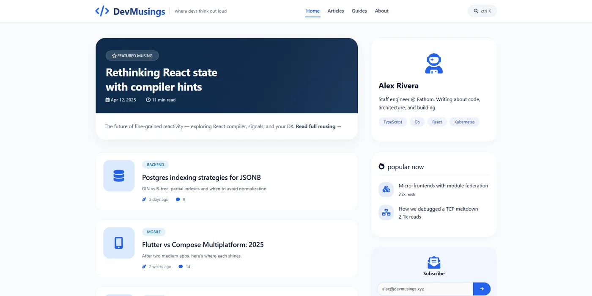
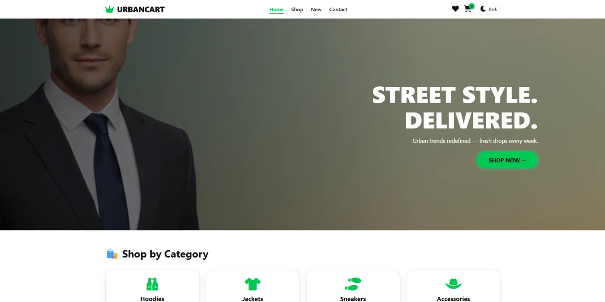

DevMusingsDeveloper blog with featured articles, popular posts and a newsletter sidebar.HTMLCSSJavaScriptLive DemoGitHub
URBANCARTStreetwear e-commerce store with category browsing, wishlist, cart and dark mode.HTMLCSSJavaScriptLive DemoGitHub
BrandItDark, bold digital agency website for branding, design, video and development.HTMLCSSJavaScriptLive DemoGitHub
ConsultProClean business consultancy website with strategic services and case studies.HTMLCSSJavaScriptLive DemoGitHub
Animated PortfolioCinematic personal portfolio with large typography and smooth animations.HTMLCSSJavaScriptLive DemoGitHub
ZEROPOINTPremium streetwear storefront with a full-width hero, shop and wishlist.HTMLCSSJavaScriptLive DemoGitHub
Portfolio 2.0Modern dark portfolio with a typing intro, services and project showcase.HTMLCSSJavaScriptLive DemoGitHub
Sohoj IT AgencyIT agency website with dark and light themes, live stats and sign-in.HTMLCSSJavaScriptLive DemoGitHub
Sohoj IT InstituteTraining institute website with course listings and a hero slider.HTMLCSSJavaScriptLive DemoGitHub